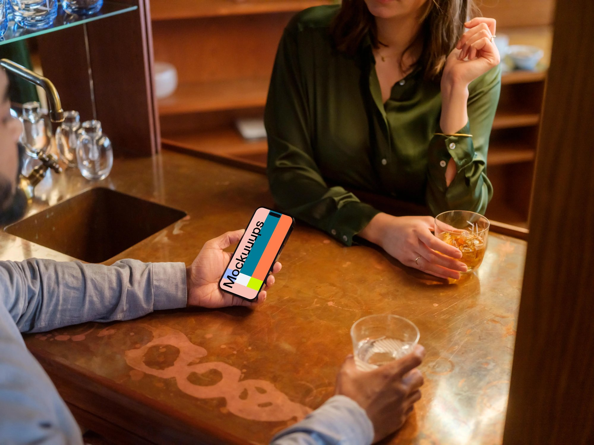

Prior to living in New York, I spent my entire childhood in Guam. I then split time between Los Angeles and San Diego throughout college and into my early 20’s, where I earned my B.S. in accounting with a data analytics minor from USC. I then went on to work at a Big 4 firm, and then in finance at a SaaS company.

As a result of my background, I'm always considering the feasibility of everything — financial or otherwise. I'm used to gathering data to explain every number and decision, and I'm used to adapting my work for various audiences. Taking something complex and breaking it down so that it's helpful and digestible is and was a part of my every day.
In 2023, I decided to pursue UX/UI to commit my time to work that’s creatively fulfilling, yet still strategic and rooted in problem solving. While I enjoyed optimizing spreadsheets for executives, I've found a new passion in helping people by crafting meaningful digital experiences.

When I'm not designing, I'm either doing yoga, caring for my rabbit Willow, humbling myself practicing wheel throwing, or just being out in the sun.
Thank you for stopping by. If you'd like to chat, please connect with me.